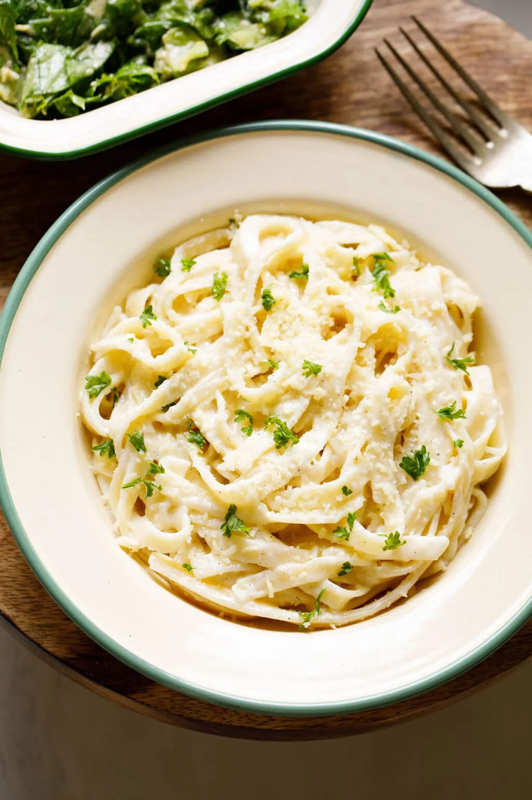

Pasta Recipe

Description:
Pasta fagioli (or pasta e fagioli), which means "pasta and beans," is a traditional Italian soup. It consists of small
noodles (such as ditalini or macaroni) and cannellini beans in a seasoned tomato broth.
You'll find a detailed ingredient list and step-by-step instructions in the recipe below, but let's go over the basics:
Pasta Fagioli Ingredients
- Oil
- Vegetables
- Seasonings and Herbs
- Broth
- Tomatoes
- Pasta
Directions
- Heat olive oil in a large saucepan over medium heat. Add onion, celery, garlic, parsley, Italian seasoning, pepper
flakes, and salt; cook and stir until onion is translucent, about 5 minutes. Stir in chicken broth, tomato sauce, and
tomatoes. Reduce the heat to low and simmer for 15 to 20 minutes.
- Add pasta and cook until tender, about 10 minutes.
- Stir in undrained beans and cook until heated through, 3 to 4 minutes.